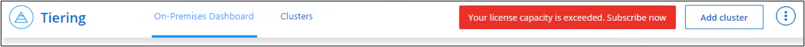

Commencez
Commencez
Configurez les licences pour le Tiering BlueXP
 Suggérer des modifications
Suggérer des modifications
Avant de configurer le Tiering à partir de votre premier cluster, commencez l'essai gratuit de 30 jours du Tiering BlueXP. Une fois la période d'essai gratuite terminée, vous devrez payer le Tiering BlueXP via un abonnement annuel ou à l'utilisation, disponible sur le marché de votre fournisseur cloud, une licence BYOL de NetApp, ou une combinaison des deux.
Quelques remarques avant de lire plus loin :
-
Si vous avez déjà souscrit à l'abonnement BlueXP (PAYGO) dans le marché de votre fournisseur cloud, vous êtes également automatiquement abonné au Tiering BlueXP pour les systèmes ONTAP sur site. Vous verrez un abonnement actif dans l'onglet BlueXP Tiering On-site Dashboard. Vous n'aurez pas besoin de vous abonner à nouveau. Un abonnement actif s'affiche dans le portefeuille digital BlueXP.
-
La licence de Tiering BYOL BlueXP (précédemment appelée licence Cloud Tiering) est une licence flottante que vous pouvez utiliser sur plusieurs clusters ONTAP sur site dans votre compte BlueXP. Ceci est différent (et beaucoup plus facile) que dans le passé, où vous avez acheté une licence FabricPool pour chaque cluster.
-
Le Tiering des données dans StorageGRID n'est pas facturé, une licence BYOL ou un Deal Registration doit être payant. Ces données hiérarchisées ne sont pas prises en compte par rapport à la capacité achetée dans votre licence.
essai gratuit de 30 jours
Si vous ne disposez pas d'une licence de Tiering BlueXP, un essai gratuit de 30 jours du Tiering BlueXP commence lorsque vous configurez le Tiering sur votre premier cluster. Après la fin de la période d'essai gratuite de 30 jours, vous devrez payer le Tiering BlueXP via un abonnement avec paiement à l'utilisation, un abonnement annuel, une licence BYOL ou une combinaison des deux.
Si votre essai gratuit prend fin et que vous n'avez pas souscrit ou ajouté de licence, ONTAP ne transfère plus les données inactives vers le stockage objet. Toutes les données précédemment hiérarchisées restent accessibles. Vous pouvez donc les récupérer et les utiliser. Lorsqu'elles sont récupérées, elles sont replacées dans le Tier de performance du cloud.
Utilisez un abonnement PAYGO à Tiering BlueXP
Les abonnements basés sur l'utilisation vous permettent d'obtenir une licence pour l'utilisation des systèmes Cloud Volumes ONTAP et de nombreux services de données cloud, comme le Tiering BlueXP, depuis le marché de votre fournisseur cloud.
Abonnement sur AWS Marketplace
Abonnez-vous au Tiering BlueXP depuis AWS Marketplace pour souscrire un abonnement avec paiement à l'utilisation pour le Tiering des données entre les clusters ONTAP et AWS S3.
-
Dans BlueXP, cliquez sur mobilité > Tiering > Tableau de bord sur site.
-
Dans la section abonnements Marketplace, cliquez sur s'abonner sous Amazon Web Services, puis cliquez sur Continuer.
-
Abonnez-vous à partir du "AWS Marketplace", Puis reconnectez-vous au site Web BlueXP pour terminer l'enregistrement.
La vidéo suivante montre le processus :
Abonnement depuis Azure Marketplace
Abonnez-vous au Tiering BlueXP depuis Azure Marketplace pour définir un abonnement avec paiement à l'utilisation pour le Tiering des données entre les clusters ONTAP et le stockage Azure Blob.
-
Dans BlueXP, cliquez sur mobilité > Tiering > Tableau de bord sur site.
-
Dans la section abonnements Marketplace, cliquez sur s'abonner sous Microsoft Azure, puis cliquez sur Continuer.
-
Abonnez-vous à partir du "Azure Marketplace", Puis reconnectez-vous au site Web BlueXP pour terminer l'enregistrement.
La vidéo suivante montre le processus :
Abonnement à partir de Google Cloud Marketplace
Abonnez-vous au Tiering BlueXP depuis Google Cloud Marketplace pour définir un abonnement avec paiement à l'utilisation pour le Tiering des données entre les clusters ONTAP et le stockage Google Cloud.
-
Dans BlueXP, cliquez sur mobilité > Tiering > Tableau de bord sur site.
-
Dans la section abonnements Marketplace, cliquez sur s'abonner sous Google Cloud, puis cliquez sur Continuer.
-
Abonnez-vous à partir du "Google Cloud Marketplace", Puis reconnectez-vous au site Web BlueXP pour terminer l'enregistrement.
La vidéo suivante montre le processus :
Utilisez un contrat annuel
Payez le Tiering BlueXP chaque année en souscrivant un contrat annuel. Les contrats annuels sont disponibles sur une durée de 1, 2 ou 3 ans.
Lorsque vous effectuez le Tiering des données inactives vers AWS, vous pouvez souscrire un contrat annuel auprès du "Page AWS Marketplace". Si vous souhaitez utiliser cette option, configurez votre abonnement à partir de la page Marketplace, puis "Associez l'abonnement à vos identifiants AWS".
Lorsque vous effectuez le Tiering des données inactives vers Azure, vous pouvez souscrire un contrat annuel auprès du "Page Azure Marketplace". Si vous souhaitez utiliser cette option, configurez votre abonnement à partir de la page Marketplace, puis "Associez l'abonnement à vos identifiants Azure".
Les contrats annuels ne sont pas pris en charge pour le Tiering vers Google Cloud.
Utilisez une licence BYOL de Tiering BlueXP
Modèle BYOL de 1, 2 ou 3 ans avec les licences Bring Your Own. La licence BYOL BlueXP Tiering (précédemment appelée licence Cloud Tiering) est une licence flottante que vous pouvez utiliser sur plusieurs clusters ONTAP sur site dans votre compte BlueXP. La capacité de Tiering totale définie dans votre licence de Tiering BlueXP est partagée entre tous de vos clusters sur site, ce qui facilite le renouvellement et la licence initiale. La capacité minimale requise pour une licence de Tiering BYOL est de 10 Tio.
Si vous ne disposez pas d'une licence de Tiering BlueXP, contactez-nous pour en acheter une :
-
Mailto:ng-cloud-tiering@netapp.com?subject=Licensing[Envoyer un e-mail pour acheter une licence].
-
Cliquez sur l'icône de chat dans le coin inférieur droit de BlueXP pour demander une licence.
Si vous ne souhaitez pas utiliser de licence basée sur des nœuds non attribuée à Cloud Volumes ONTAP, vous pouvez la convertir en licence de Tiering BlueXP avec la même équivalence en dollars et la même date d'expiration. "Cliquez ici pour plus d'informations".
La page du portefeuille digital BlueXP vous permet de gérer le Tiering des licences BYOL. Vous pouvez ajouter de nouvelles licences et mettre à jour des licences existantes.
Tiering BlueXP, licence BYOL, à partir de la version 2021
La nouvelle licence BlueXP Tiering a été introduite en août 2021 pour les configurations de Tiering prises en charge dans BlueXP via le service de Tiering BlueXP. BlueXP prend actuellement en charge le Tiering vers plusieurs systèmes de stockage cloud : Amazon S3, Azure Blob Storage, Google Cloud Storage, NetApp StorageGRID et un stockage objet compatible S3.
La licence FabricPool que vous pourriez avoir utilisée auparavant pour le Tiering des données ONTAP sur site dans le cloud est uniquement conservée pour les déploiements ONTAP dans des sites qui ne disposent pas d'un accès Internet (également appelés « sites distants ») et pour les configurations de Tiering dans le stockage objet dans le cloud IBM. Si vous utilisez ce type de configuration, vous installez une licence FabricPool sur chaque cluster à l'aide de System Manager ou de l'interface de ligne de commande de ONTAP.

|
Le Tiering vers StorageGRID ne nécessite pas de licence de Tiering FabricPool ou BlueXP. |
Si vous utilisez actuellement des licences FabricPool, vous n'êtes affecté que lorsque la licence FabricPool atteint sa date d'expiration ou sa capacité maximale. Contactez NetApp lorsque vous avez besoin de mettre à jour votre licence ou avant pour vous assurer que vous pouvez transférer vos données vers le cloud sans interruption.
-
Si vous utilisez une configuration prise en charge par BlueXP, vos licences FabricPool seront converties en licences de Tiering BlueXP, qui apparaîtront dans le portefeuille digital BlueXP. À l'expiration de ces licences initiales, vous devez mettre à jour les licences de Tiering BlueXP.
-
Si vous utilisez une configuration qui n'est pas prise en charge dans BlueXP, vous continuerez à utiliser une licence FabricPool. "Découvrez comment faire le Tiering des licences à l'aide de System Manager".
Voici quelques points que vous devez connaître sur les deux licences :
| Licence de Tiering BlueXP | Licence FabricPool |
|---|---|
Il s'agit d'une licence flottante que vous pouvez utiliser sur plusieurs clusters ONTAP sur site. |
Il s'agit d'une licence par cluster que vous achetez et achetez une licence pour every cluster. |
Il est enregistré dans le portefeuille digital BlueXP. |
Elle s'applique à des clusters individuels via System Manager ou l'interface de ligne de commandes ONTAP. |
Le Tiering de configuration et de gestion s'effectue à l'aide du service de Tiering BlueXP. |
La configuration et la gestion du Tiering s'effectuent via System Manager ou l'interface de ligne de commandes ONTAP. |
Une fois configuré, vous pouvez utiliser le service de Tiering sans licence pendant 30 jours grâce à la version d'évaluation gratuite. |
Une fois configuré, vous pouvez procéder au Tiering des 10 premiers To de données gratuitement. |
Obtenez votre fichier de licence de Tiering BlueXP
Après avoir acheté votre licence de Tiering BlueXP, vous activez la licence dans BlueXP en saisissant le numéro de série de Tiering BlueXP et le compte NSS ou en téléchargeant le fichier de licence NLF. Les étapes ci-dessous montrent comment obtenir le fichier de licence NLF si vous prévoyez d'utiliser cette méthode.
Vous devez disposer des informations suivantes avant de commencer :
-
Numéro de série du Tiering BlueXP
Recherchez ce numéro dans votre numéro de commande ou contactez l'équipe chargée du compte pour obtenir ces informations.
-
ID de compte BlueXP
Vous pouvez trouver votre identifiant de compte BlueXP en sélectionnant le menu déroulant compte en haut de BlueXP, puis en cliquant sur gérer compte en regard de votre compte. Votre ID de compte se trouve dans l'onglet vue d'ensemble.
-
Connectez-vous au "Site de support NetApp" Et cliquez sur systèmes > licences logicielles.
-
Entrez le numéro de série de votre licence de Tiering BlueXP.

-
Dans la colonne License Key, cliquez sur Get NetApp License File.
-
Saisissez votre identifiant de compte BlueXP (il s'agit d'un identifiant de locataire sur le site d'assistance) et cliquez sur Submit pour télécharger le fichier de licence.

Ajoutez les licences BYOL de Tiering BlueXP à votre compte
Après avoir acheté une licence de Tiering BlueXP pour votre compte BlueXP, vous devez ajouter la licence à BlueXP pour utiliser le service de Tiering BlueXP.
-
Cliquez sur gouvernance > portefeuille numérique > licences de services de données.
-
Cliquez sur Ajouter une licence.
-
Dans la boîte de dialogue Add License, entrez les informations de licence et cliquez sur Add License:
-
Si vous disposez du numéro de série de la licence de hiérarchisation et connaissez votre compte NSS, sélectionnez l'option entrer le numéro de série et saisissez ces informations.
Si votre compte sur le site de support NetApp n'est pas disponible dans la liste déroulante, "Ajoutez le compte NSS à BlueXP".
-
Si vous disposez du fichier de licence de hiérarchisation, sélectionnez l'option Télécharger le fichier de licence et suivez les invites pour joindre le fichier.

-
BlueXP ajoute la licence pour que votre service de Tiering BlueXP soit actif.
Mettez à jour une licence BYOL de Tiering BlueXP
Si votre période de licence approche la date d'expiration ou si votre capacité sous licence atteint la limite, vous serez informé dans le Tiering BlueXP.

Cet état apparaît également sur la page du portefeuille digital BlueXP.

Vous pouvez mettre à jour votre licence de Tiering BlueXP avant son expiration. Ainsi, vous pouvez hiérarchiser vos données dans le cloud sans interrompre votre activité.
-
Cliquez sur l'icône de chat en bas à droite de BlueXP pour demander une extension de votre période ou de votre capacité supplémentaire à votre licence de Tiering BlueXP pour le numéro de série spécifique.
Une fois que vous avez payé la licence et qu'elle est enregistrée sur le site de support NetApp, BlueXP met automatiquement à jour la licence dans le portefeuille digital BlueXP. La page des licences des services de données reflète le changement en 5 à 10 minutes.
-
Si BlueXP ne peut pas mettre à jour automatiquement la licence, vous devrez charger manuellement le fichier de licence.
-
C'est possible Procurez-vous le fichier de licence sur le site de support NetApp.
-
Sur la page du portefeuille digital BlueXP dans l'onglet Data Services Licenses, cliquez sur
 Pour le numéro de série de service que vous mettez à jour, cliquez sur mettre à jour la licence.
Pour le numéro de série de service que vous mettez à jour, cliquez sur mettre à jour la licence.
-
Dans la page Update License, téléchargez le fichier de licence et cliquez sur Update License.
-
BlueXP met à jour la licence pour que votre service de Tiering BlueXP reste actif.
Appliquez les licences de Tiering BlueXP aux clusters dans des configurations spéciales
Les clusters ONTAP dans les configurations suivantes peuvent utiliser les licences de Tiering BlueXP, mais la licence doit être appliquée de manière différente des clusters à un seul nœud, des clusters configurés haute disponibilité, des clusters dans les configurations de Tiering Mirror et des configurations MetroCluster à l'aide de FabricPool Mirror :
-
Clusters hiérarchisés vers le stockage objet IBM Cloud
-
Clusters installés dans des « sites invisibles »
Processus pour les clusters existants disposant d'une licence FabricPool
Lorsque vous "Découvrez l'un de ces types de clusters spéciaux dans le Tiering BlueXP", Le Tiering BlueXP reconnaît la licence FabricPool et l'ajoute au portefeuille digital BlueXP. Les clusters se poursuivront comme d'habitude dans le Tiering des données. Après expiration de la licence FabricPool, vous devez acheter une licence de Tiering BlueXP.
Processus applicable aux nouveaux clusters
Lorsque vous détectez des clusters classiques dans le Tiering BlueXP, vous configurez le Tiering à l'aide de l'interface de Tiering BlueXP. Dans ce cas, les actions suivantes se produisent :
-
La licence de Tiering BlueXP « parent » assure le suivi de la capacité utilisée pour le Tiering par tous les clusters pour s'assurer qu'elle dispose de suffisamment de capacité. La capacité totale sous licence et la date d'expiration sont indiquées dans le portefeuille digital BlueXP.
-
Une licence de hiérarchisation « enfant » est automatiquement installée sur chaque cluster afin de communiquer avec la licence « parent ».

|
La capacité et la date d'expiration de la licence indiquées dans System Manager ou dans l'interface de ligne de commandes ONTAP pour la licence « enfant » ne sont pas des informations réelles. Donc, ne craignez pas que les informations ne soient pas identiques. Ces valeurs sont gérées en interne par le logiciel de Tiering BlueXP. Les informations réelles sont suivies dans le portefeuille digital BlueXP. |
Pour les deux configurations répertoriées ci-dessus, vous devez configurer la hiérarchisation à l'aide de System Manager ou de l'interface de ligne de commande ONTAP (et non à l'aide de l'interface de Tiering BlueXP). Dans ce cas, vous devrez transmettre manuellement la licence enfant à ces clusters à partir de l'interface de Tiering BlueXP.
Notez que comme les données sont hiérarchisées vers deux emplacements de stockage objet différents dans les configurations Tiering Mirror, vous devez acheter une licence offrant une capacité suffisante pour le Tiering des données sur les deux sites.
-
Installez et configurez vos clusters ONTAP à l'aide de System Manager ou de l'interface de ligne de commande ONTAP.
Ne configurez pas de hiérarchisation à ce stade.
-
"Achetez une licence de Tiering BlueXP" pour répondre aux besoins en capacité du nouveau cluster ou des nouveaux clusters.
-
Dans BlueXP, "Ajoutez la licence au portefeuille digital BlueXP".
-
Dans le Tiering BlueXP, "découvrir les nouveaux clusters".
-
Dans la page clusters, cliquez sur
Pour le cluster et sélectionnez Deploy License.
-
Dans la boîte de dialogue Deploy License, cliquez sur Deploy.
La licence enfant est déployée sur le cluster ONTAP.
-
Retournez à System Manager ou à l'interface de ligne de commandes ONTAP et configurez votre configuration de Tiering.